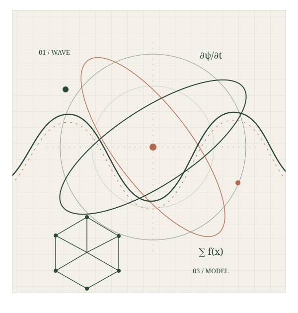

PHYSICS
Physics at the Frontiers: Quantum Science, Materials and Energy
Quantum and photonic technologies; condensed matter and advanced materials; energy and sustainability; computational physics; astronomy, space science and instrumentation.
NATIONAL SYMPOSIUM · 2026
Relevance of Basic Sciences in the Age of Emerging Technologies

Every technological frontier begins with a fundamental question. From the behaviour of matter and energy to the mathematical models that describe our world, basic science gives discovery its foundations.
F2F 2026 brings together faculty, researchers and postgraduate students to explore how Physics, Chemistry and Mathematics shape quantum technologies, advanced materials, cleaner energy systems, computation and artificial intelligence.
Through plenary talks, oral presentations, poster flash talks and interdisciplinary discussion, the symposium offers a space to share research, exchange ideas and build new academic connections.
Read the symposium brochureDistinct disciplines, connected by the questions that move science forward.
PHYSICS
Quantum and photonic technologies; condensed matter and advanced materials; energy and sustainability; computational physics; astronomy, space science and instrumentation.
CHEMISTRY
Green and sustainable chemistry; catalysis; functional and nanomaterials; chemical sensors; molecular science; energy, environment and health applications.
MATHEMATICS
Mathematical modelling; statistics and data science; computational mathematics; optimisation; AI foundations; mathematical methods in physical and chemical sciences.
INTERDISCIPLINARY
How discoveries in Physics, Chemistry and Mathematics shape technology and influence learning, decision-making and everyday life.
Plenary talks, original research and focused scientific conversations.
Programme and presentation allocations are subject to confirmation and abstract selection. Session chairs, coordinators and rapporteurs are to be announced.
Original research, review studies and conceptually strong contributions are invited across all four thematic areas.
All abstracts will be screened by the Organising Committee. Selected abstracts will appear in the symposium abstract booklet.
Open to young faculty from UG/PG colleges, research scholars and final-year postgraduate students in relevant disciplines.
Complete the application by 10 November 2026.
Wait for selection confirmation from the Organising Committee.
Only confirmed participants should pay the registration fee by 15 November 2026.
The fee includes the symposium kit, meals and tea refreshments. Outstation participants arrange their own travel and accommodation. Late applications will not be considered.
Bringing together the people and institutions making F2F 2026 possible.
CA Arvind GuptaChairman, DIBNS
Prof. Shailja PantPrincipal, DIBNS
Prof. Versha Parcha
Dr. Aasheesh Raturi
Dr. Aasheesh Raturi
Dr. Abhilasha
Dr. Raju Chandra
Dr. Deepak Kumar
Dr. Jagdish Purohit
Dr. Nitesh KumarUPES, Dehradun
Dolphin (PG) Institute of Biomedical & Natural Sciences (DIBNS) is situated in the Himalayan foothills. Established in 2002, the institute supports multidisciplinary teaching, research, innovation and scientific inquiry.
Dolphin (PG) Institute of Biomedical & Natural Sciences
Dehradun,
Uttarakhand, India